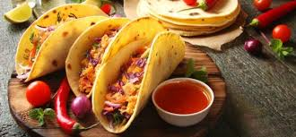
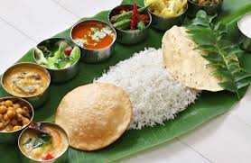
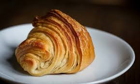
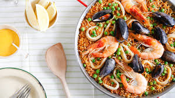
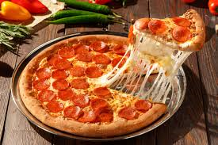
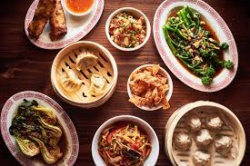

Mexican food is a common favorite cuisine in America. From chili con carne to enchiladas, spicy Mexican dishes are a popular choice. Western restaurants typically use Northern Mexican cuisine, but there are a number of other options. Ancient Mayan dishes have a subtler flavor while Central and Southern Mexico have a sophisticated taste. Restaurant goers can enjoy eggs, vegetables, beans, chilies and cumin in major Mexican dishes. Chocolate, tomatoes and salsa are always favorites as well.
India is one of the most densely populated countries on the planet. With so many people within the nation, Indian cuisine is highly varied. Curries are the traditional fare, but Indian food is not confined for just curry. There are a number of regions that make vegetarian dishes, and ayurvedic medicinal traditions are often used in creating food. Within India, visitors will find a range of sweet, hot and spicy dishes. Even better, the nation is home to millions of street food stands. At these stands, visitors can try out unique treats for a very cheap price.
Say Oui, Oui to French cuisine! Five-star chefs are often trained in French cooking. It uses cheese, chocolate and baguettes for delicious meals. Of course, a French meal would never be complete without some wine! Despite their focus on cheese, bread and chocolates, the French amazingly remain thin.
Spanish cuisine is exceptional because it limits spices. Instead of hiding the flavor of a dish with cumin, chilies or pepper, it only uses enough spice to bring out the natural flavor of the food. Due to its location along the coast, Spanish food has a strong focus on seafood. Famously, cafes and restaurants in Spain offer tapas or pinches. These snack-sized dishes can be made of basically anything and only cost a couple of euros. Before siesta, Spaniards can stop in a local cafe and get a glass of wine and a tapa for merely a couple of euros
With a culinary history that stretches back centuries, Italian cuisine is one of the world’s favorites. Spumoni ice cream, spaghetti, lasagna and pizza are traditional dishes that are widely available in the United States. Beyond these basic dishes, there are a number of regional favorites like Parmesan cheese and Parma ham. One part of Italy is even known for making a kind of maggot cheese. The cheese is fermented and allowed to sit out so that flies lay eggs. Afterward, it is packed at the perfect time for maggots to develop. It might not suit everyone’s taste buds, but it is a specialty from the country. If this cheese is not to your liking, the country has more than 400 types of cheese.
In a traditional Chinese meal, you can expect to have noodles or rice. Although many American-based Chinese restaurants use fried rice, most China-based Chinese restaurants serve basic steamed rice. With a strong Buddhist history, vegetarian dishes like tofu remain popular. Interestingly, garlic and chilies are considered non-vegetarian in Buddhism because they stimulate the chi. If you go to a Chinese vegetarian restaurant, don’t expect a lot of spices. For non-vegetarian dishes, you can expect Peking duck, thousand year old eggs, squid and a range of meat dishes. Vegetables are always included with dinner, and they are far from your mother’s broccoli. Chinese vegetable dishes are often the most delicious part of the meal.
